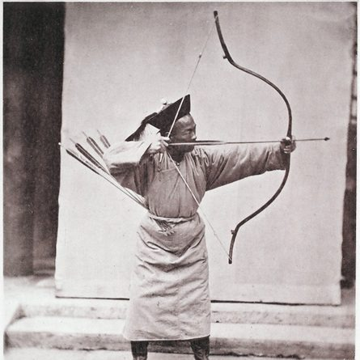
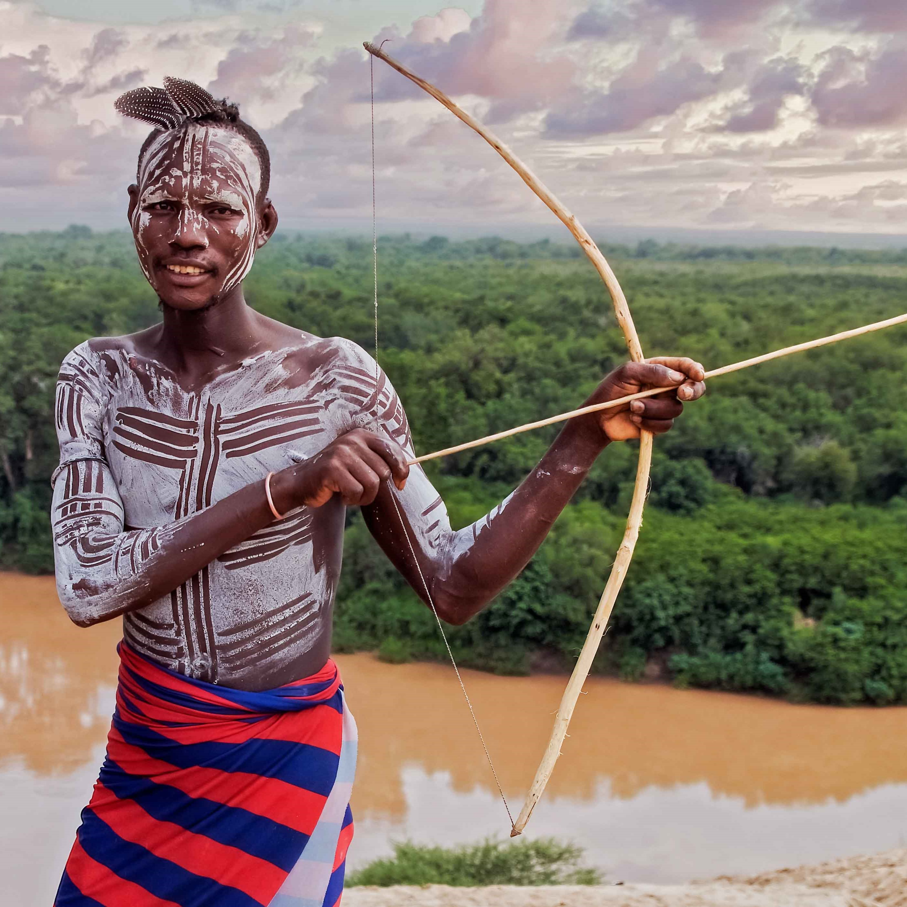
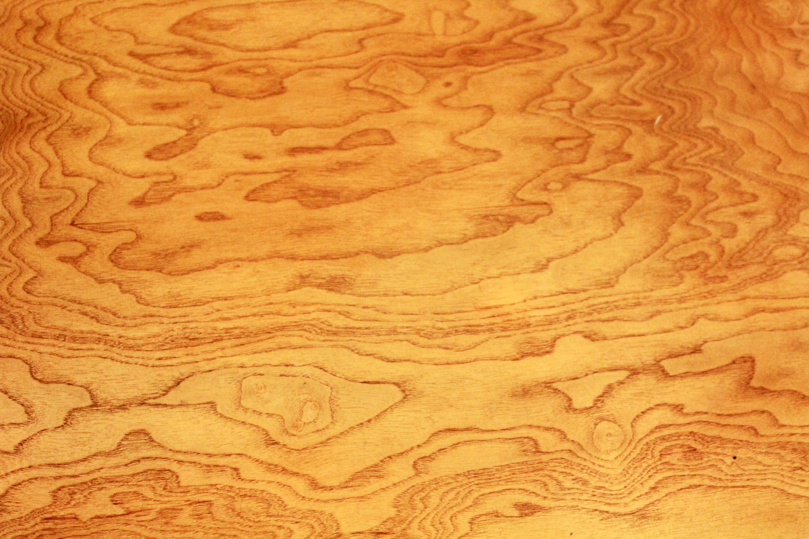

Arrow Through Time
Throughout human history, archery has been more than a survival tool. It is now an art, an instrument of warfare, and a beloved sport. This website has information about the history of archery, its changes over thousands of years, and the differences between historical and modern archery. Whether you like ancient techniques or enjoy modern equipment, you will find a lot of information and gain knowledge about the Arrow through Time
  